anything-doc.org
Table of Contents
- Introduction
- Active <Anything>
- keybindings when <Anything> is activated
- anything-source I have written
- how to write an anything-source
- <name> (required)
- <candidate> (required)
- <action> (required)
- <icon> (optional)
- <match> (optional) default: "anything_match"
- <anything-execute-action-at-once-if-one> (optional)
- < anything-execute-action-at-once-if-one-even-no-keyword > (optional)
- <anything-action-when-2-candidates-even-no-keyword> (optional)
- call anything
- anything-properties
- global variable
- Known Bugs
Introduction
If you use GNU/Emacs maybe you have known "Anything"
maybe not ,
you can visit "Anything" on Emacswiki
and see what "Anything" it is .
and this isn't anything.el ,it 's anything.ahk.
if you think anything.ahk is great ,
and have written an anything-source for it ,you can post it on autohotkey-forum
there are some screencast here(no voice) :
- http://www.screenr.com/xxss
- http://www.screenr.com/vp8s (new one )
- http://www.screenr.com/BH7s and another one show anything-favorite-directories.ahk
- http://www.screenr.com/MyHs and another show anything-window-switch.ahk
- http://www.screenr.com/Zbjs (new one ,show anything-services.ahk)
you can also download these videos
- anything-explore-history.ahk_anything-run.ahk.mp4
- anything-explore-history.ahk.mp4
- anything-window-switch.mp4
- anything-favorite-directories.ahk.mp4
- http://screencast-repos.googlecode.com/files/anything-services.ahk.zip
and source code is host on Github
you can follow these links ,and save them on you disk .
- anything.ahk (core)
- anything-explorer-history.ahk (an anything-source)
- anything-favorite-directories.ahk (an anything-source)
- anything-run.ahk (an anything-source)
- anything-run-launch-plugin.ahk (an anything-source work with anything-run.ahk)
- anything-window-switch.ahk (an anything-source)
- anything-config.ahk (config file)
Active <Anything>
to active anything.ahk , press F3 , or Windows+r , or Alt+TAB
see anything-config.ahk for detail
keybindings when <Anything> is activated
you can input search string just like google to narrow the candidates
keybindings for select candiates
| Keybindings | Desc |
|---|---|
| Down or Ctrl+n | select next candidate |
| Up or Ctrl+p | select previous candidate |
| Ctrl+o | will select next source ,that means ,all candidate from first source will be send to last |
| pageUp ,Alt-v | pageup |
| pageDn ,Ctrl-v(doesn't work very well),Ctrl-d | pageDn |
keybindings for execute actions
| Keybindings | Desc |
|---|---|
| <Click>and <Enter> | to execute the default action with the selected candiate as parameter |
| <Ctrl-j> | to execute the second action(if has) with the selected candidate as parameter |
| <Ctrl-m> | to execute the third action(if has) with the selected candidate as parameter |
| <Ctrl-k> | to execute the forth action (if has)with the selected candidate as parameter |
| <Ctrl-e> | to execute the fifth action (if has)with the selected candidate as parameter |
| Keybindings | Desc |
|---|---|
| <Alt-j> | do the same to Ctrl-j ,but doesn't quit "Anything" |
| <Alt-m> | do the same to Ctrl-m ,but doesn't quit "Anything" |
| <Alt-k> | do the same to Ctrl-k ,but doesn't quit "Anything" |
| <Alt-e> | do the same to Ctrl-k ,but doesn't quit "Anything" |
| Keybindings | Desc |
|---|---|
| <Ctrl-L> | will ignore all the candidates ,and treate the search string as candidate , and list all available "action" to execute on the special "candidate" |
| <Ctrl-i> | do something similar to <Ctrl-l> ,but don't list all available "action" ,just execute the "action" special by "property": no_candidate_action |
| <Esc> <Ctrl-g> | quit Anything |
keybindings for edit
| Keybindings | Desc |
|---|---|
| backspace and Ctrl-h | back delete a char |
| Ctrl-y | paste |
| Ctrl-w | copy and quit anything session |
| Alt-w | copy without quit anything session |
anything-source I have written
Now I have wrote 6 <anything-source> for anything.ahk
- anything-explorer-history.ahk ,
anything-source : <anything_explorer_history_source> defined here.
- anything-favorite-directories.ahk,
anything-source: <anything_favorite_directories_source> defined here.
- anything-run.ahk (a replacement of Windows+r)
anything-source: <anything_run_source> defined here.
anything-run-launch-plugin.ahk (work together with anything-run.ahk)
anything-source: <anything_run_launch_source> defined here.
- anything-window-switch.ahk (a replacement of Alt-Tab)
<anything_window_switcher_source> and
- anything-precess-manager.ahk
anything-source: <anything_precess_manager_source> defined here.
- anything-services.ahk
anything-source: <anything_services_source> defined here.
anything-explorer-history.ahk
when you visit directory (double click on a directory,up or back ) in
explorer.exe ,it can remember directories you have visited ,then you can
press <F3> to active "Anything" list all directory history you have
visited. ,you can revisit it easily with anything-explorer-history.ahk .
how to configure anything-explorer-history.ahk
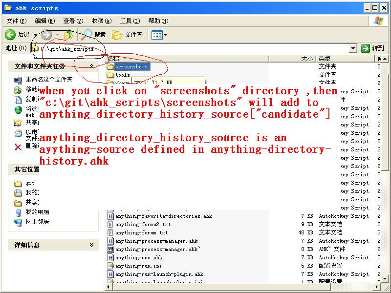
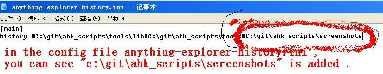
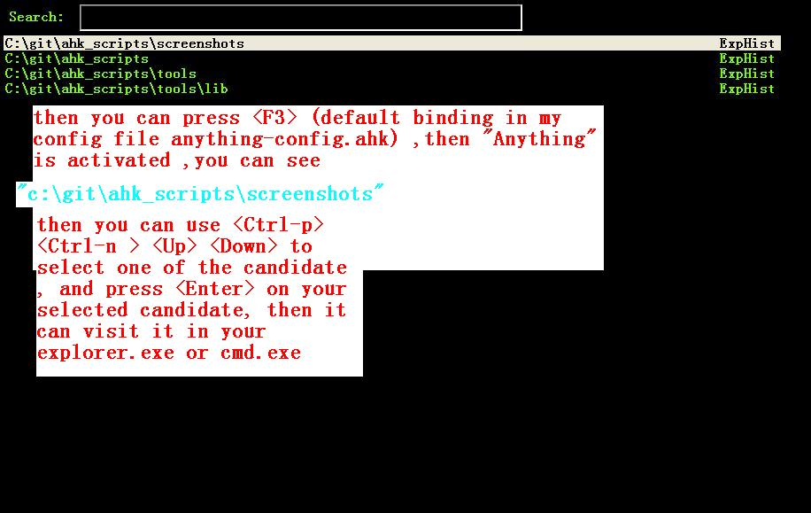
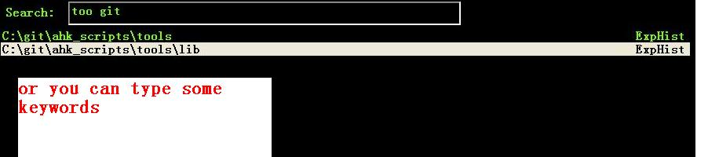
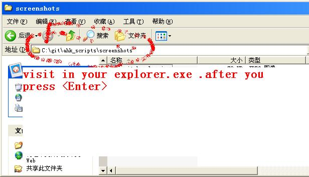
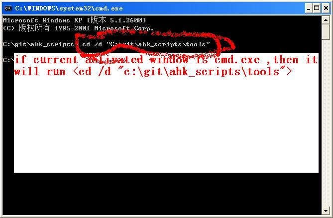
- if you only have one anything-source :
anything_explorer_history_source (defined in anything-explorer-history.ahk)
you can use it like this :
#include anything.ahk #include anything-explorer-history.ahk f3::anything(anything_explorer_history_source)
- if you also have other anything-sources ,
default : it is included in anything-config.ahk
you just need add
anything_explorer_history_source
to the sources
for example :
#include anything.ahk #include anything-explorer-history.ahk #include anything-favorite-directories.ahk f3:: sources:=Array() ;; anything_explorer_history_source is an anything-source defined in anything-explorer-history.ahk sources.insert(anything_explorer_history_source) ;; anything_favorite_directories_source is an anything-source defined in anything-favorites-directory.ahk sources.insert(anything_favorite_directories_source) anything_multiple_sources(sources) return
- actions for anything-explorer-history.ahk
anything_explorer_history_source["action"]:=Array("visit_directory","delete_from_directory_history" ,"delete_all_directory_history")
actions description key binding visit_directory visit selected directory <Click>and <Enter> delete_from_directory_history delete select directory from directory history <Ctrl-j> delete_all_directory_history add a new directory to directory history <Ctrl-m> list all actions for current candidate TAB list all actions <Ctrl-L> - it will visit your selected directory in current Explorer.exe (if current activated window is Explorer.exe)
- it will visit your selected directory in current cmd.exe (if current activated window is cmd.exe)
- it will visit your selected directory in current msys.bat (if current activated window is msys.bat)
- it will visit your selected directory in current Explorer.exe (if current activated window is Explorer.exe)
anything-favorite-directories.ahk (with with anything-explorer-history.ahk )
anything-favorite-directories.ahk do something similiar to anything-explorer-history.ahk
add your favorite directories ,and visit it using "Anything".
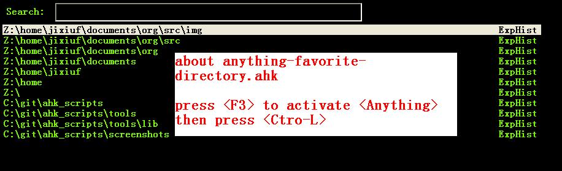
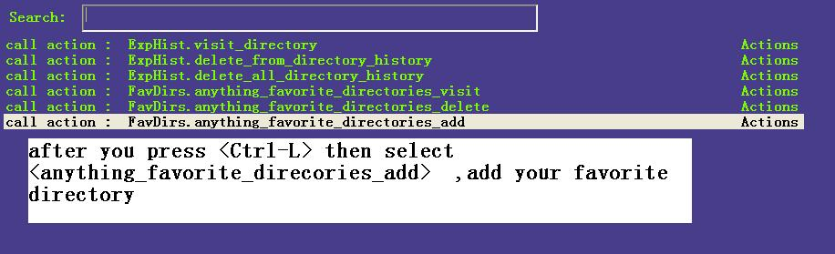
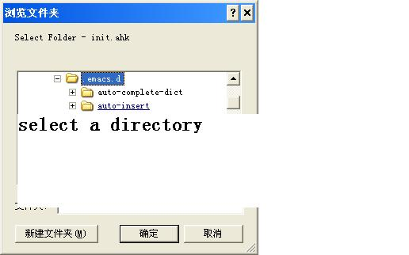
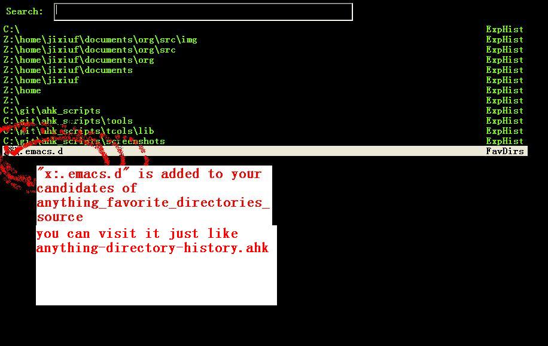
- how to configure it .
if you use anything-favorites-directory as the only source for anything.ahk
you just need to bind it to a key like this :
#include anything.ahk ;; anything_favorite_directories_source is an anything-source defined in anything-favorites-directory.ahk #include anything-favorites-directory.ahk f1::anything(anything_favorite_directories_source)
if you also use other sources ,just need add "anything_favorite_directories_source" to
the array of sources for anything_multiple_sources(sources)
default have added to anything-config.ahk
#include anything.ahk #include anything-explorer-history.ahk #include anything-favorite-directories.ahk f3:: sources:=Array() ;; anything_explorer_history_source is an anything-source defined in anything-explorer-history.ahk sources.insert(anything_explorer_history_source) ;; anything_favorite_directories_source is an anything-source defined in anything-favorites-directory.ahk sources.insert(anything_favorite_directories_source) anything_multiple_sources(sources) return
- how to add a new Folder to your favorite-directories
for this anything-source , your favorite directories
are the candidates ,so before you can use it ,you should
add some candidates (some directories).
- first activate "Anything" (default press F3 )
2 Press <Ctrl-L> list all available actions select
"call action: Favdirs.anything_favorite_directories_add "
if you don't kown what's the meaning of <Ctrl-L> ,
see keybindings for execute actions.
anything_favorite_directories_source have three actions
anything_favorite_directories_source["action"]:=Array("anything_favorite_directories_visit","anything_favorite_directories_delete","anything_favorite_directories_add")
- first activate "Anything" (default press F3 )
- actions for anything-favorite-directories.ahk
actions description key binding anything_favorite_directories_visit visit selected directory <Click>and <Enter> anything_favorite_directories_delete delete select directory from favorite directories <Ctrl-j> anything_favorite_directories_add add a new directory to favorite directories <Ctrl-m> list all actions for current candidate TAB list all actions <Ctrl-L>
- then you can use "Anything" selected one of your favorite directory
- it will visit your selected directory in current Explorer.exe (if current activated window is Explorer.exe)
- it will visit your selected directory in current cmd.exe (if current activated window is cmd.exe)
- it will visit your selected directory in current msys.bat (if current activated window is msys.bat)
- it will visit your selected directory in current Explorer.exe (if current activated window is Explorer.exe)
anything-run.ahk is a replacement of <Win-r>
it could remember old command too. when you press <Windows+r>
about how to use it .see comments in anything-run.ahk
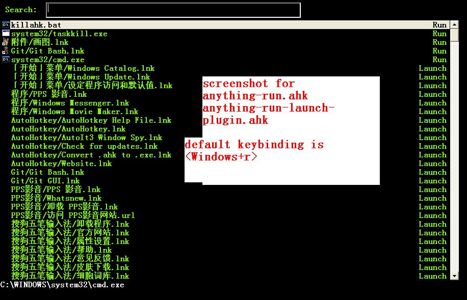
#include anything.ahk #include anything-run.ahk #include anything-run-launch-plugin.ahk #r:: my_anything_properties2:=Object() my_anything_properties2["anything_use_large_icon"]:=0 my_anything_properties2["FontSize"]:= 12 anything_multiple_sources_with_properties(Array(anything_run_source, anything_run_launch_source),my_anything_properties2) returnif a command(candidate) have not been added ,you can type the command in the
textfield (for example :"cmd") add press <Ctrl-L> list all available actions select
call action: Run.anything_run
then a cmd.exe is executed ,and "cmd" as a candidate is add to candidates
you can also append other anything-source,for example
#r:: sources:=Array() sources.insert(anything_cmd_source) sources.insert(anything_run_launch_source) sources.insert(anything_explorer_history_source) sources.insert(anything_favorite_directories_source) anything_multiple_sources(sources) return
anything-window-switch.ahk is a replacement of Alt-Tab
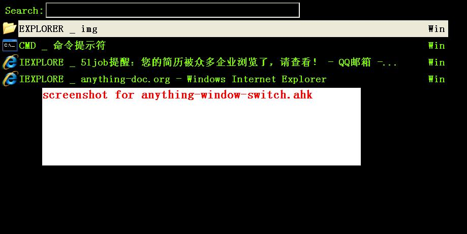
#include anything.ahk #include anything-window-switch.ahk !Tab:: ; custom anything-properties (window width and window height) my_anything_properties:=Object() my_anything_properties["win_width"]:= 900 my_anything_properties["win_height"]:= 180 sources:=Array() sources.insert(anything_window_switcher_source) anything_multiple_sources_with_properties(sources,my_anything_properties) returnanything-window-switch.ahk will treat all windows as candidates
the window_title window_process_name is used to fitler.
actions for anything-window-switch.ahk
anything_window_switcher_source["action"]:=Array("anything_ws_activate_window", "anything_ws_close_window" ,"anything_ws_assign_key_4_current_window", "anything_ws_kill_process")
| actions | description | key binding |
|---|---|---|
| anything_ws_activate_window | visit selected window | <Click>and <Enter> |
| anything_ws_close_window | close selected window | <Ctrl-j> |
| anything_ws_assign_key_4_current_window | assign some special "TEXT" to your selected window ,then you can use it to selected the assigned window | <Ctrl-m> |
| anything_ws_kill_process | kill process of selected window | <Ctrl-k> |
| anything_ws_exclude_window_by_class | don't list this window as candidates(excluded by ahk_class) | <Ctrl-e> |
| list all actions for current candidate | TAB |
about the third action : anything_ws_assign_key_4_current_window
for example :there are three windows opened now : Firefox Explore ,Emacs
now the selected candidate is "Firefox" ,and you press <Ctrl-m>
then a InputBox appear ,and you type in "www" .
next time you press Alt-TAB ,and type "www" Firefox is activated
anything-process-manager.ahk
is a process manager , you can use it kill a selected process
or change the priority of the process
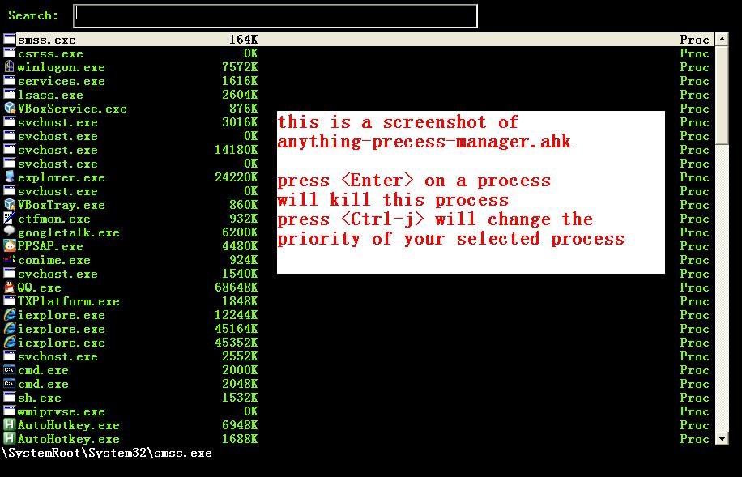
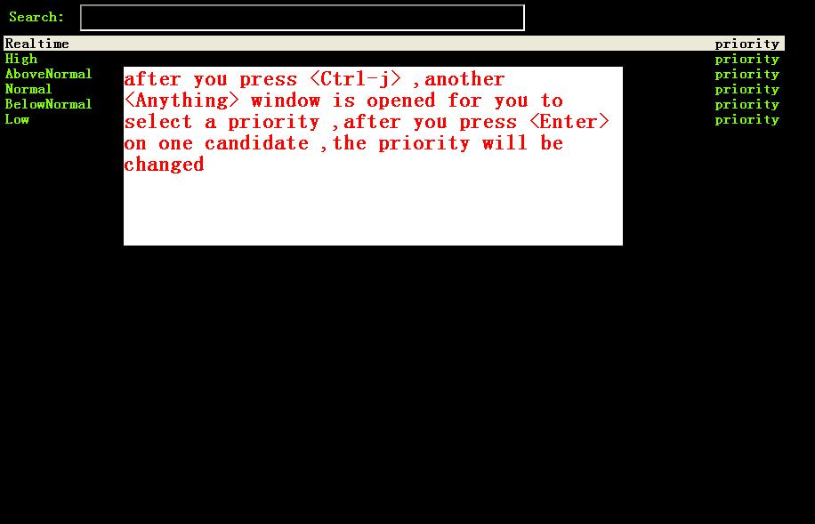
#include anything.ahk #include anything-process-manager.ahk f2:: anything(anything_process_manager_source) return2 if you also have other anything-sources ,
you just need add
anything_process_manager_source
to the sources
for example :
#include anything.ahk #include anything-process-manager.ahk #include anything-services.ahk ^f4:: sources:=Array() sources.Insert(anything_services_source) sources.Insert(anything_process_manager_source) ; <--------- here. anything_multiple_sources(sources) return
anything-services.ahk
is a Windows Services Manager ,just like services.msc
it can start a stopped service ,or stop a running service
or change the start type of a service <Manual> <Disabled><Automictal>
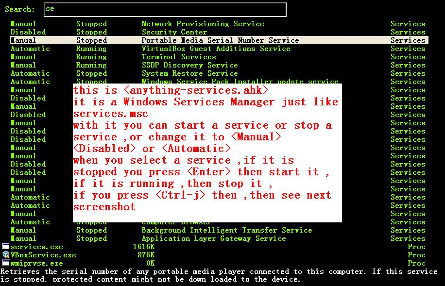
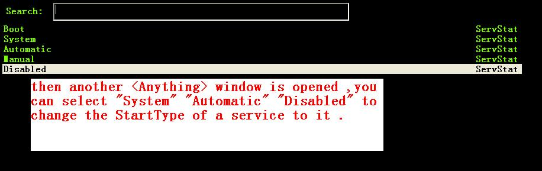
#include anything.ahk #include anything-services.ahk f4:: anything(anything_services_source) return2 if you also have other anything-sources ,
you just need add
anything_services_source
to the sources
for example :
#include anything.ahk #include anything-process-manager.ahk #include anything-services.ahk ^f4:: sources:=Array() sources.Insert(anything_services_source) ; <--------- here. sources.Insert(anything_process_manager_source) anything_multiple_sources(sources) return
how to write an anything-source
an anything-source is an Object with some pre-defined properties
now it support 8 anything-source-properties :
- name
- action
- candidate
- icon
- match
- anything-execute-action-at-once-if-one
- anything-execute-action-at-once-if-one-even-no-keyword
- anything-action-when-2-candidates-even-no-keyword
for example:
my_source:=Object()
<name> (required)
<name> is a string ,it is just a name of this anything-source
my_source["name"]:="my_source_name"
<candidate> (required)
<candidate> is an array of all candidates ,or a function name(string)
without parameter which return an array .
each element of the array can be :
- a string
this string will be displayed on listview , so that you can select one
of the candidates ,and execute action on your selected candidate.
for example:
my_source["candidate"] :=Array("red","green")
or
my_candidates_fun() { return Array("red","green") } my_source["candidate"]:="my_candidates_fun"
- an array
the first element of this array must be a string ,the string will be
displayed on listview ,and you can selected one of the candidates ,and
execute action on your selected candidate.
other element of this array can be anything , you can store useful info.
there. and when you execute action on your selected candidate,the selected
candidate will be the parameter for the function specified by property "action"
see <action>
for example:
my_source["candidate"]:=Array( Array("red","useful info ,string ,object or anything(red) "), Array("green","useful info ,string ,object or anything(red)") )
<action> (required)
<action> is a function name(string) or a list of function name (array).
and those functions must have one parameter. actually the parameter is
the selected <candidate> .
my_action:="my_action_fun" my_action_fun(candidate) { MsgBox , %candidate% } my_source["action"]:=my_actionor
my_action:="my_action_fun" my_action_fun(candidate) { display :=candidate[1] usefulinfo :=candidate[2] MsgBox % usefulinfo } my_source["action"]:=my_actionor
my_action:=Array("my_action_fun","my_action_fun2") my_action_fun(candidate) { MsgBox , %candidate% from action_fun } my_action_fun2(candidate) { MsgBox , %candidate% from action_fun2 } my_source["action"]:=my_action
<icon> (optional)
<icon> is a function(string) which return an ImageList.
this property is optional .if this property isn't empty
<Anything> will display icon before each candidates.
icon_fun() { ImageListID := IL_Create(2) ; Create an ImageList to hold 10 small icons. Loop 2 ; Load the ImageList with a series of icons from the DLL. IL_Add(ImageListID, "shell32.dll", A_Index) return ImageListID } my_icon :="icon_fun" my_source["icon"]:=my_icon
<match> (optional) default: "anything_match"
if it has value for example:
my_source["match"]:="anything_match" ; or my_source["match"]:="anything_match_case_sensetive"or any other value .
the value of it is a function name accept two parameters :(candidate,pattern)
this function is used to filter candidates from all candidates depends
on what you have type in the textfield.
; if it match ,then return 1 ,else return 0
and these tow function is defined in anything.ahk
;@param: candidate is current candidate passed to this function ;@param: pattern, is what you have typed in the textfield anything_match_case_sensetive(candidate,pattern){} anything_match(candidate,pattern){}
<anything-execute-action-at-once-if-one> (optional)
if it has value for example:
my_source["anything-execute-action-at-once-if-one"]:="yes"then if only one candidate left on the listview it will execute the
default action with the only one candidate as parameter automatically.
you needn't press <Enter> here.
< anything-execute-action-at-once-if-one-even-no-keyword > (optional)
if it has value
for example
my_source["anything-execute-action-at-once-if-one"]:="yes"then if only one candidate left on the listview even no key keyword in the
textfiled it will execute the default action with the only one candidate
as parameter auto. you needn't press <Enter> here.
<anything-action-when-2-candidates-even-no-keyword> (optional)
the value of it is a function accept two parameters
funname(candidate1,candidate2){} my_source["anything-action-when-2-candidates"] :="funname"if only two candidats for you to select
then this function will be called .
anything-window-switch.ahk use this property :
when only two windows ,And you press Alt-Tab ,then select another window directly
without press RETURN by youself.
call anything
- anything(source)
anything(my_source)
- anything_multiple_sources(sources) with other anything-source
sources := Array() sources.Insert(my_source) sources.Insert(other_source) anything_multiple_sources(sources)
- anything_with_properties(anything-source,anything-properties)
my_anything_properties:=Object() my_anything_properties["win_width"]:= 900 my_anything_properties["win_height"]:= 180 anything_with_properties(my_source,my_anything_properties)
- anything_multiple_sources_with_properties(anything-sources,anything-properties)
my_anything_properties:=Object() my_anything_properties["win_width"]:= 900 my_anything_properties["win_height"]:= 180 sources:=Array() sources.insert(my_source) sources.insert(other_source) anything_multiple_sources_with_properties(sources,my_anything_properties)
anything-properties
| properties | description | default vaule | type |
|---|---|---|---|
| win_width | the width of anything window | 900 | integer |
| win_height | the height of anything window | 510 | integer |
| Transparent | the transparent of anything window | 225 | integer |
| WindowColor | the color of anything window | "black" | string |
| ControlColor | the color of control on anything window | "black" | string |
| FontSize | the font size of font on anyting window | 12 | integer |
| FontColor | the font colorof font on anyting window | "c7cfc00" | string |
| FontWeight | the font weight weight on font on anything window | "bold" | bold, italic, strike, underline, and norm |
| quit_when_lose_focus | auto quit anything when anything lose focus (yes or no) | "yes" | "yes" or "no" |
| no_candidate_action | when no candiates left and you press Ctrl-i ,this function is called | "anything_do_nothing" | a function name (accept one parameter) |
global variable
| global variable name | description |
|---|---|
| anything_wid | anything window id |
| anything_pattern | anything pattern you have typed in the textfield |
| anything_properties | an Array of current anything propeties |
| anything_previous_activated_win_id | previous activated win_id before anthing-window appera |
for the special anything property :
"quit_when_lose_focus"
when you create a new window(or Inputbox ,Dialog) while anything session is opened ,
then "anything" will lose focus ,because the new window you created is the child
window of "anything window" then it will be killed too.
so if you want to make it work
you can do it like this:
your_fun(){ global old_value_of_quit_when_lose_focus=anything_properties["quit_when_lose_focus"] anything_set_property_4_quit_when_lose_focus("no") ;write your code here ... anything_set_property_4_quit_when_lose_focus(old_value_of_quit_when_lose_focus=anything_properties) }
Known Bugs
- when sometimes you type too quickly , letters get dropped from
search key , the letters get typed and then deleted .
or you type "ab" but got "ba".
or you type "abc" ,only "ab" are used to filter candidates
Becuase I use Input() in a loop to read what you have typed
if the code in loop take too long time ,maybe when you type next char
the Input() hasn't been called . so the letter would be dropped
I try to fix this by compare %anything_pattern% with text in the textfield
if they are different ,then I know some letter got dropped ,but it seems
doesn't work very well(Now is fixed.)
- anything-explorer-history.ahk must be the last included file
maybe the reason is
there is some code look like this
#IfWinActive ahk_class ExploreWClass|CabinetWClass
or
Return